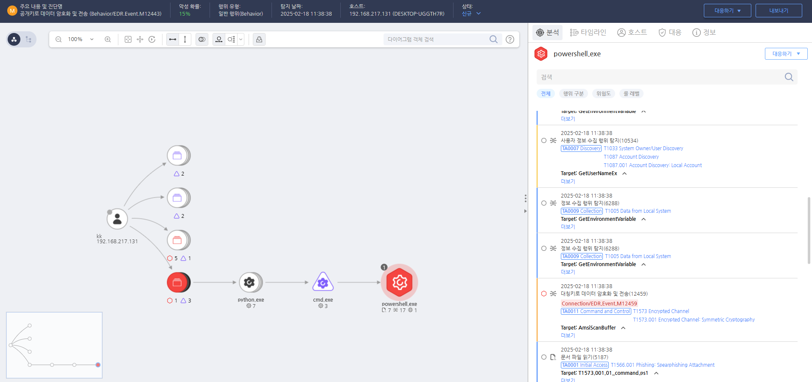

T1573.001.01 Encrypted Channel Using Symmetric Cryptography
D3FEND
MITRE ATT&CK 액션을 기준으로 대응 방안을 작성
Detection
대칭키로 데이터를 암호화하고 전송하는 행위를 탐지합니다.
Detection(EDR)

https://172.18.10.125:8903/#/analysis/incident/67b3f443002dc6cc00000754
Response
공격자 C&C 서버로 추정되는 주소를 차단합니다.
Mitigations
암호화된 트래픽 모니터링 (M1011 - Application Layer Protocol)
- SSL/TLS를 포함한 암호화된 트래픽을 실시간으로 모니터링하고, 정상적인 트래픽 외의 의심스러운 암호화 통신을 탐지
- 암호화된 통신을 복호화하여 트래픽을 검사하는 중간자 공격 방지 장치를 설치하거나 웹 프록시를 사용하여 암호화된 데이터를 실시간으로 분석
- SSL/TLS 세션을 복호화하여 통신 패턴 및 데이터 흐름을 분석, 비정상적인 트래픽이나 악성 통신을 식별
TLS/SSL 인증서 검증 (M1050 - Data Obfuscation)
- SSL/TLS 인증서를 사용하여 통신 암호화가 이루어질 때, 인증서 검증을 강화하여 악성 서버와의 연결을 차단
- 인증서 투명성 및 인증서 검증 절차를 강화하여 잘못된 인증서가 사용되는 경우 이를 탐지하고 연결을 차단
- 유효하지 않은 SSL 인증서 또는 자체 서명된 인증서를 통해 암호화된 통신을 시도할 경우 즉시 차단
안티 바이러스 및 엔드포인트 보안 (M1036 - Application Layer Protocol)
- 엔드포인트 보안 소프트웨어를 사용하여 악성 프로세스 및 암호화된 트래픽을 분석하고, 비정상적인 활동을 탐지
- 동적 분석 및 행위 기반 탐지 기술을 활용하여 암호화된 통신을 사용하는 악성 코드를 식별하고, 이를 차단
- 실시간 악성 코드 탐지 및 탐지된 암호화 트래픽 차단 기능을 통해 시스템에 감염된 악성 코드가 외부와 통신을 시도할 때 이를 탐지하고 차단
포트 및 프로토콜 필터링 (M1031 - Network Segmentation)
- 네트워크 방화벽과 포트 필터링을 사용하여 의심스러운 암호화된 트래픽이 특정 포트를 통해 통신하지 못하도록 차단
- 암호화된 통신에 사용되는 비정상적인 포트나 프로토콜을 차단하여 공격자가 비정상적인 채널을 통해 데이터를 전송할 수 없도록 함
- 서버 측 암호화 정책을 설정하여 외부와의 비인가된 암호화된 통신을 방지
패킷 분석 및 트래픽 분석 (M1033 - Process Monitoring)
- 네트워크 트래픽 분석 도구를 사용하여 암호화된 패킷을 비정상적인 패턴으로 분석하고, 의심스러운 통신을 실시간으로 탐지
- 패킷 검사 시스템을 사용하여 대칭 암호화가 사용된 트래픽을 분석하고, 악성 통신이 있을 경우 이를 차단
- 암호화된 트래픽이 정상적인 애플리케이션이나 서비스에서 발생하는지 여부를 확인하고, 비정상적인 암호화 통신을 탐지하여 차단
침해 탐지 시스템 (M1060 - Exploitation for Privilege Escalation)
- 침해 탐지 시스템(IDS)을 사용하여 암호화된 통신이 의심스러운 패턴을 나타낼 경우 이를 알림으로 제공하고, 실시간 대응
- 네트워크 트래픽을 모니터링하여 암호화된 연결을 통해 이루어지는 권한 상승 시도나 데이터 유출을 탐지
- 다중 계층 보안을 적용하여 침해 탐지가 실패하지 않도록 하고, 타겟 공격을 차단하는 데 효과적인 방어 시스템을 구축
Affected Techniques
Action 실행시 함께 영향을 받는 다른 Techniqes
|D3FEND|
|:-----------:|